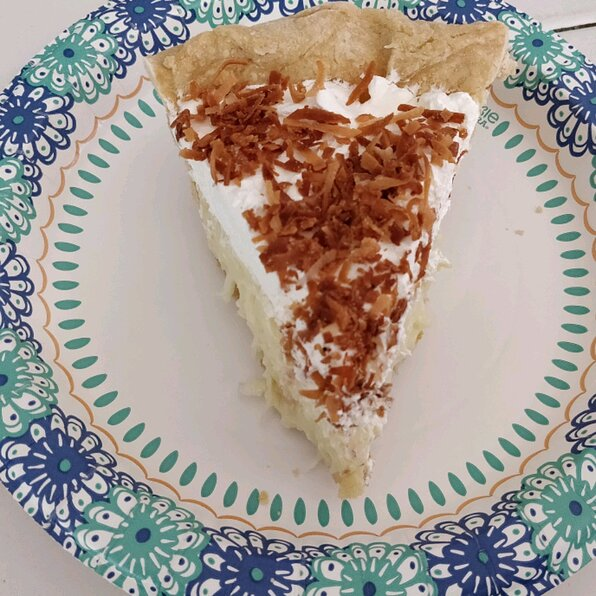

Old Fashioned Coconut Cream Pie

Tasty creampie!
This is a tried-and-true, old-fashioned coconut cream pie. Took many years of searching and baking to find the right one and this is it! Enjoy!
Ingredients:
- 1 cup sweetened flaked coconut
- 3 cups half-and-half
- 2 large eggs, beaten
- ¾ cup white sugar
- ½ cup all-purpose flour
- ¼ teaspoon salt
- 1 teaspoon vanilla extract
- 1 (9 inch) pie shell, baked
- 1 cup frozen whipped topping, thawed
Steps:
- Preheat oven to 350 degrees F (175 degrees C).
- Spread the coconut on a baking sheet and bake it, stirring occasionally, until golden brown, about 5 minutes.
- In a medium saucepan, combine the half-and-half, eggs, sugar, flour and salt and mix well. Bring to a boil over low heat, stirring constantly. Cook, stirring constantly, for 2 minutes more. Remove the pan from the heat, and stir in 3/4 cup of the toasted coconut and the vanilla extract. Reserve the remaining coconut to top the pie.
- Pour the filling into the pie shell and chill until firm, about 4 hours.
- Top with whipped topping and with the reserved coconut.